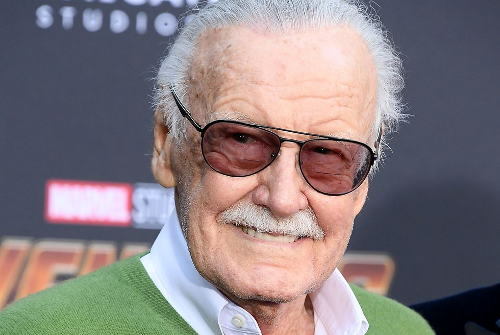

"Stan the Man": A Hero Among Heroes
"I thought it would be great to do superheroes that have the same kind of life problems that any reader - that anybody could have."
Stan Lee was is the most acclaimed American comic-book creato. Stanley Martin Lieber was born in New York City on December 28, 1992. Stanley, nicknamed Stan Lee, went on to work for the company that would grow to become Marvel Comics. Working together with other notable comic creators such as Steve Ditko, Jack Kirby, and more, Stanley was a huge part of creating some of the most notorious household superheroes in history. Following his passing on November 12, 2018 he is still mourned by heroes and fans alike.